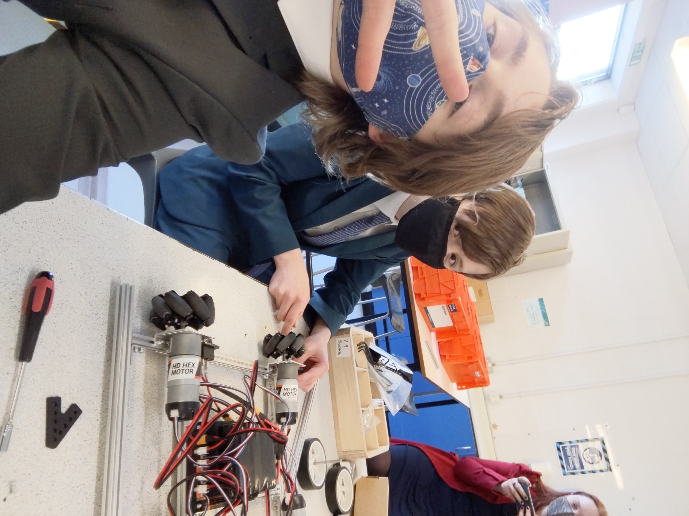
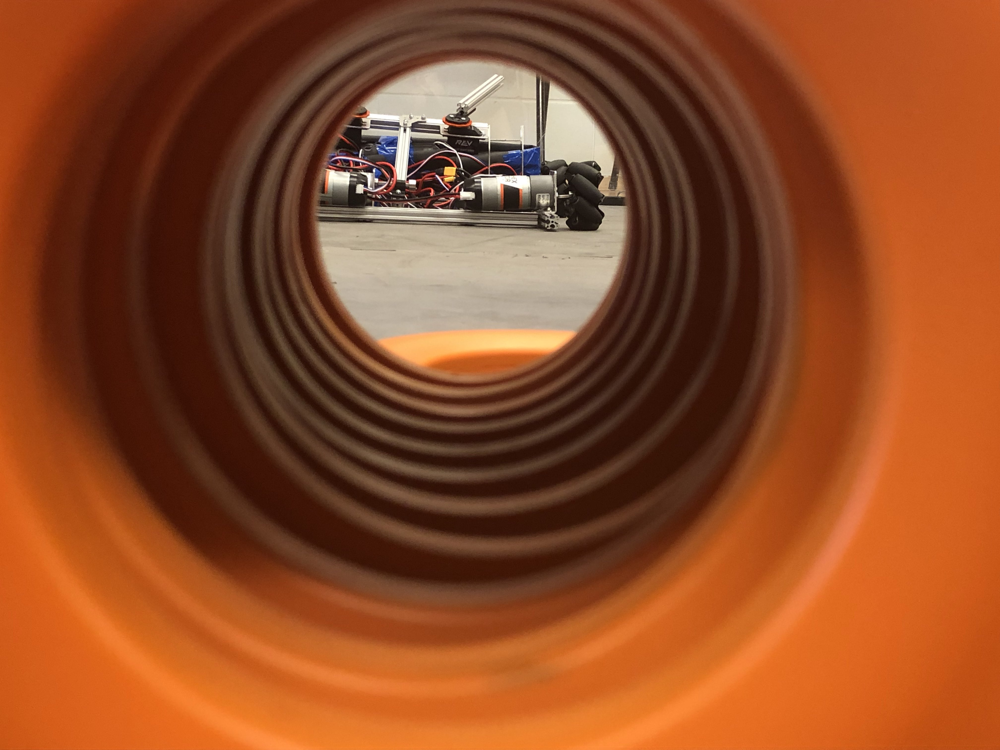

Ground X
The 2020-2021 Season
Our second season got off to a strange start. Due to Covid We were all at home so we couldn't actually meet up and work on the robot. Despite this we did our best to do what we could. This primarily including designing the robot and planning what we could do once we actually got into school
Eventually we did manage to get started on the robot. This was great as we really missed being able to actually work on it. The game for 2020-2021 was Ultimate Goal. This involved us shooting some rings in some goals or placing them in. Initially we planned on creating a shooter mechanism however as we tried to develop this it became clear that it would be quite difficult to acheive when we could go for a much simpler catapult design.
As soon as we had the robot working it was time to get automating. This went well and ended up scoring us a good percentage of our points when it came to actually playing the game.
As soon as we had the actual robot working we could take part in the game. It was slightly unusual as we had to set up our own arena (Which was pretty fun in itself) and then we had the whole day to set the best score possible. In the end we got a score of 48 which we were very happy with. Alongside the scores we also had a judging interview where we displayed our robot and our team to the judges. This went well and as a result we won the Inspire Award for the second year in a row!
